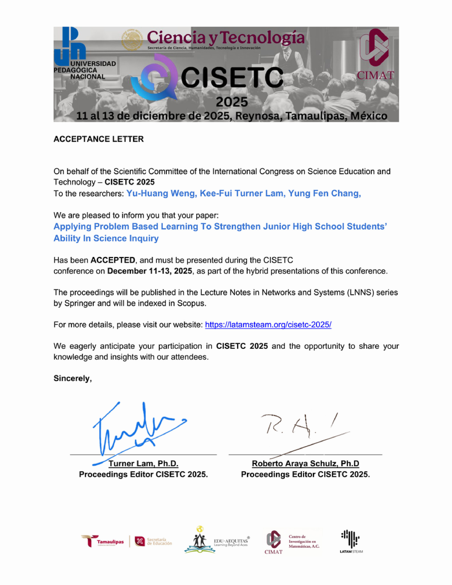
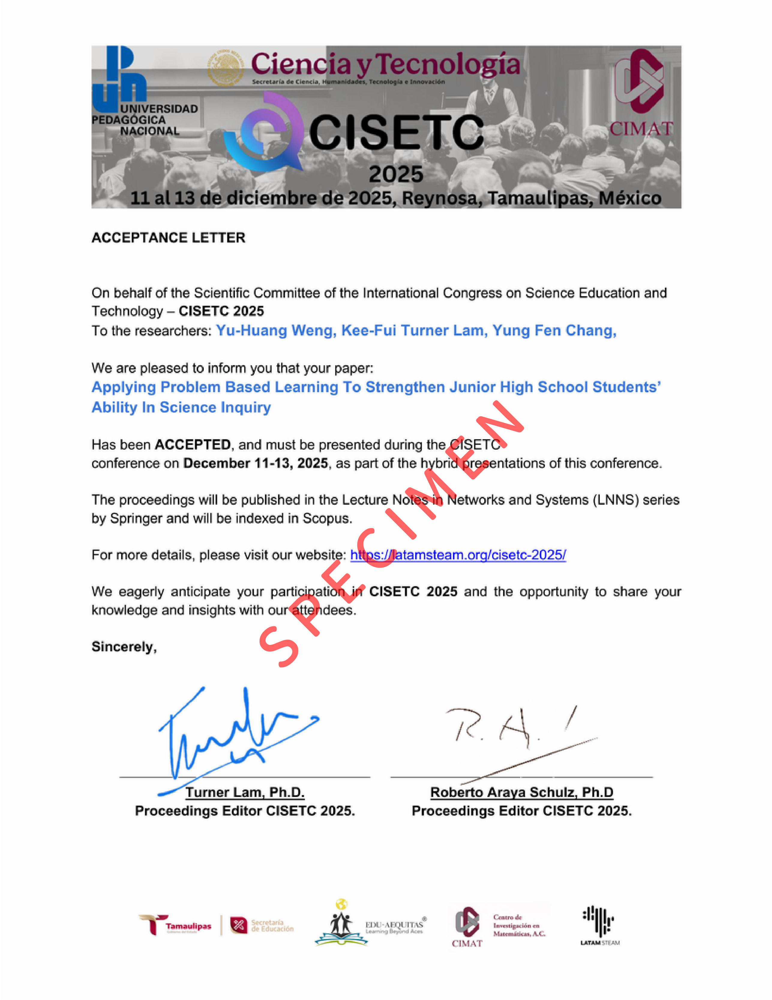
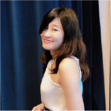
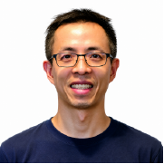

SEAS STEAM School · Secondary & High School Students SEAS STEAM 學校 · 專為國高中生設計 SEAS STEAM 学校 · 专为国高中生设计
Publish a peer-reviewed international conference paper before university. Build the academic identity that sets you apart for the world's top 100 universities. 在升大學前發表國際學術論文，建立學術身份，打造進入全球百大名校的核心競爭力。 在升大学前发表国际学术论文，建立学术身份，打造进入全球百大名校的核心竞争力。
Using the DDMTS methodology, each phase builds on the last — guiding students from their very first idea all the way to international conference presentation, with a dedicated 1:1 mentor by their side.採用DDMTS教學架構，每個階段環環相扣，在一對一導師陪伴下，從最初的構想走向國際會議發表。采用DDMTS教学架构，每个阶段环环相扣，在一对一导师陪伴下，从最初的构想走向国际会议发表。
Our students have already presented at CISETC 2025 — an international conference whose proceedings are published by Springer and indexed in Scopus. These are the exact credentials top universities look for.我們的學生已在CISETC 2025上發表論文，由Springer出版並收錄於Scopus索引。這正是頂尖大學所重視的學術資歷。我们的学生已在CISETC 2025上发表论文，由Springer出版并收录于Scopus索引。这正是顶尖大学所重视的学术资历。




Every year, thousands of applicants with near-perfect grades get rejected by MIT, Oxford, and NUS. The ones who get in share one thing: they've shown they can think like a researcher — not just study for exams.每年都有無數近乎完美成績的學生遭頂尖大學拒絕。那些錄取的學生有一個共同點：他們展現了像研究者一樣思考的能力，而不只是考試高手。每年都有无数近乎完美成绩的学生遭顶尖大学拒绝。那些录取的学生有一个共同点：他们展现了像研究者一样思考的能力，而不只是考试高手。
Our students' research papers are submitted for presentation at CITIE — the International Congress on Science Education and Technology, organized by LATAM STEAM. The conference proceedings are published by Springer and indexed in Scopus, one of the world's most recognized academic databases.我們學生的研究論文將提交至CITIE國際科學教育與技術大會發表，由LATAM STEAM主辦。會議論文集由Springer出版，並收錄於全球最具公信力的學術資料庫Scopus之中。我们学生的研究论文将提交至CITIE国际科学教育与技术大会发表，由LATAM STEAM主办。会议论文集由Springer出版，并收录于全球最具公信力的学术数据库Scopus之中。
Limited spots available each cohort. Fill out the application form today — our team will contact you within 3 business days to discuss your research interests and program fit. 每梯次名額有限。立即填寫申請表，我們的團隊將在3個工作日內與您聯繫，討論您的研究興趣和計畫適合度。每梯次名额有限。立即填写申请表，我们的团队将在3个工作日内与您联系，讨论您的研究兴趣和计划适合度。
📋 Fill Out Application Form 📋 填寫申請表單📋 填写申请表单